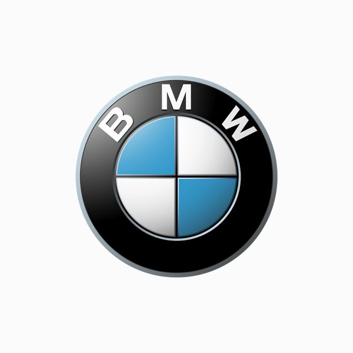
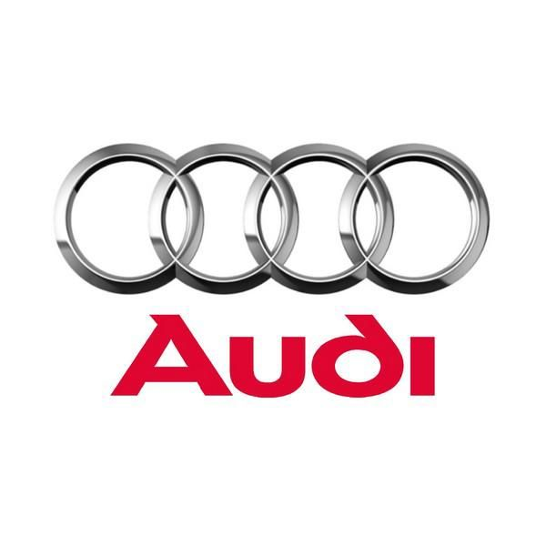
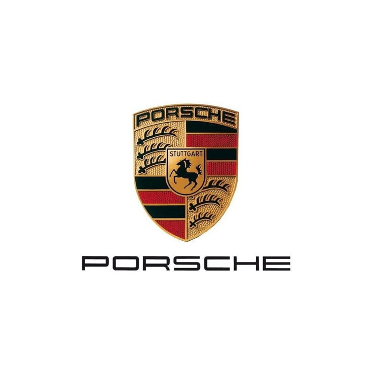
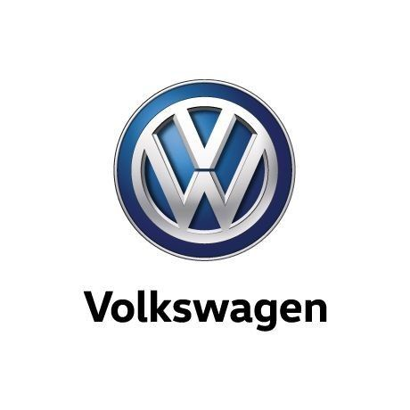

German Engineering
Präzision. Leistung. Leidenschaft.
German cars are globally celebrated for their precision engineering, cutting-edge technology, luxury, and exhilarating performance. They embody a perfect blend of innovation, craftsmanship, and driving dynamics, making them benchmarks in the automotive world.
Featured Vehicles

BMW
Driving Pleasure Meets Engineering Precision
BMW is a symbol of driving pleasure, engineering precision, and sporty sophistication. Renowned for its dynamic handling and distinctive design, BMW blends luxury with performance in a way that thrills enthusiasts and comforts everyday drivers alike.

Audi
Innovation, Elegance, and Advanced Technology
Audi stands for innovation, elegance, and advanced technology. Recognized for its clean design, cutting-edge interiors, and signature Quattro all-wheel drive, Audi continues to push boundaries in both performance and electric mobility.

Mercedes-Benz
Timeless Luxury and Automotive Excellence
Mercedes-Benz represents timeless luxury, refined comfort, and automotive excellence. With a legacy built on innovation and prestige, it remains a benchmark in the premium segment, offering everything from stately sedans to high-performance AMGs.

Porsche
Pure Sports Car Performance and Precision Engineering
Porsche is the embodiment of pure sports car performance, precision engineering, and unmistakable style. Famous for the legendary 911 and a growing range of high-powered vehicles, Porsche delivers exhilarating driving experiences without compromise.

Volkswagen
Versatility, Reliability, and Cutting-Edge Engineering
Volkswagen is known for its versatility, reliability, and solid engineering. Offering a wide range of vehicles from compact city cars to SUVs, Volkswagen consistently delivers practicality with a touch of sophistication. With a focus on efficiency, safety, and quality, VW strikes a balance between everyday usability and driving enjoyment, all while embracing innovation in the electric mobility space with models like the ID. series.